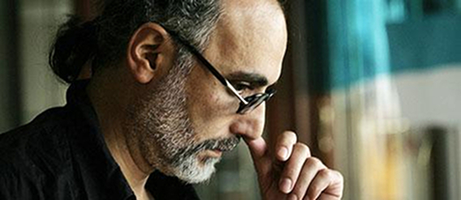

ЭТО СЛАДКОЕ СЛОВО - АРМЕНИЯ. РАЗМЫШЛЕНИЯ ПО ПОВОДУ НАЦИОНАЛЬНОЙ ИДЕНТИЧНОСТИ
Любовь к родине одно из чувств, которое не воспитывается – кажется, мы просто рождаемся, обладая им, как частью нашей «конструкции». В более взрослом возрасте, когда Любовь к родине уже не слепа, возникает детский интерес – из чего же она состоит. Попытка деконструкции приводит к тому, что Любовь к родине состоит из ряда дорогих и сладких для наших ушей слов…
ЭТИ СЛАДКИЕ СЛОВА - БИБЛЕЙСКИЙ НАРОД
Армяне называют себя библейским народом. Это звучит восхитительно. Настолько восхитительно, что нам не хочется переноситься в новые времена. Видимо, поэтому мы больше говорим о прошлом, чем о настоящем и будущем. Александр Дюма, посетивший Кавказ полтора века назад, отмечал, что для армян ветхозаветный Абрам скончался вчера, а Яков все еще жив.
Так было, по крайней мере, до недавних пор, пока Армения находилась в составе СССР, где парение в истории являлось высшей формой национальной сублимации — не сейчас, не здесь и не нами решались судьбы Республики, а в Центре, в Москве.
Большинство армян с ликованием приняло независимость. Однако начиная с 1992-го года, периода жуткого энергетического кризиса, совпавшего с последней фазой войны, определенная часть народа стало сильно тосковать по Советскому Союзу. Эту тоску я объясняю не столько относительной обеспеченностью в СССР всем тем, что позднее мы научились называть “потребительской корзиной”, сколько нежеланием людей думать о настоящем, в том числе – своего народа. Ведь… так приятно мечтать, вместо того, чтобы рассуждать. И так сладко грезить, зная, что не несешь ответственности.
Правда, те, кто приняли независимость как нечто желанное и естественное, тоже не смогли оторваться от истории. Чтобы идти вперед, надо было вернуться назад. Ведь советская радикальная модернизация вырывала корни национального самосознания. Некоторые западные культурологи (в частности, Борис Гройс) твердят, что это определяло движение новых пост-тоталитарных обществ от будущего в прошлое. Я не согласен с этим – только символически можно двигаться назад в поезде, идущем вперед. Но чтобы сверить с себя с новой эпохой, нам стало насущно необходимо переосмысление, или попросту постижение собственной этнопсихологии и традиционных исторических вех.
Так было, по крайней мере, до недавних пор, пока Армения находилась в составе СССР, где парение в истории являлось высшей формой национальной сублимации — не сейчас, не здесь и не нами решались судьбы Республики, а в Центре, в Москве.
Большинство армян с ликованием приняло независимость. Однако начиная с 1992-го года, периода жуткого энергетического кризиса, совпавшего с последней фазой войны, определенная часть народа стало сильно тосковать по Советскому Союзу. Эту тоску я объясняю не столько относительной обеспеченностью в СССР всем тем, что позднее мы научились называть “потребительской корзиной”, сколько нежеланием людей думать о настоящем, в том числе – своего народа. Ведь… так приятно мечтать, вместо того, чтобы рассуждать. И так сладко грезить, зная, что не несешь ответственности.
Правда, те, кто приняли независимость как нечто желанное и естественное, тоже не смогли оторваться от истории. Чтобы идти вперед, надо было вернуться назад. Ведь советская радикальная модернизация вырывала корни национального самосознания. Некоторые западные культурологи (в частности, Борис Гройс) твердят, что это определяло движение новых пост-тоталитарных обществ от будущего в прошлое. Я не согласен с этим – только символически можно двигаться назад в поезде, идущем вперед. Но чтобы сверить с себя с новой эпохой, нам стало насущно необходимо переосмысление, или попросту постижение собственной этнопсихологии и традиционных исторических вех.
ЭТО СЛАДКОЕ СЛОВО - ИМПЕРИЯ
Как, например, в конце концов, относиться недолгому периоду истории Армении — правлению царя Тиграна II Великого (95—55 до н.э.)? Будучи заложником у парфян до своего сорокалетия (“кризиса среднего возраста” — по современному выражению), Тигран выкупил собственную свободу, уступив им “семьдесят долин” (Страбон, 11.14.15). Вернувшись на родину, он завоевал всю Малую Азию, расширив границы страны до Средиземного и Каспийского морей. Империя! Слово, произносимое с осуждением, когда оно относится к другим народам, и — с умилением, когда речь идет об истории твоих предков. Не в моих скромных силах изменить этот двойной стандарт вообще, но по отношению к собственному народу я бы хотел попытаться.
Тигран, конечно же, одержал ряд впечатляющих побед — как бы иначе он стал императором? — однако, сделав его объектом национальной гордости, мы сами себе перекрываем путь: как же тогда осуждать несправедливости, которые чинили нам другие империи, завоевывавшие в течение веков нашу страну и выгонявшие нас с родных земель? Ведь Тигран в своей империи тоже успел переселить целые народы (кровь которых до сих пор ищут армяне в жилах друг друга, наткнувшись на чье-либо “нетипичное” поведение). Как можно оценивать подобный факт положительно, не признавая такого же права за другими? Правда, объективность — не железная гарантия торжества справедливости, однако она является ее необходимой предпосылкой. Особенно в условиях, когда и сами имперские народы, выживавшие в этом качестве до наших дней… сетуют на бессердечность других (всем хочется быть правыми).
Помимо “провинностей”, которые задним числом можно приписать великодержавной политике Тиграна, логично будет «упрекнуть» его и в недальновидности. Он сумел удержать завоеванные территории не более чем на два десятка лет, потеряв большую их часть в войне с римлянами. То есть в “пакет” оценки военного успеха государственного деятеля должно войти не только завоевание территорий, но и способность их сохранить. С той же проблемой столкнулась Первая Республика 1918—20 гг. Тогда чрезмерная протяженность линии фронта сама обусловила поражение армянских сил перед лицом превосходящих людских ресурсов турок (наблюдение историка Бабкена Арутюняна в частной беседе со мной). После обоих случаев остались территориальные грезы, которые не дают многим спокойно жить, хотя они же сами далеко не всегда готовы за них умереть.
А что касается «чужих» империй, в частности, советской («нетрадиционной»), по которой скучают многие ее бывшие граждане, они изнурительны во многих отношениях. То религией своей давят и мобилизацией мужского населения. То привилегией в выборе красивых женщин. То экономической дискриминацией и своевольным распоряжением природными ресурсами. То… высокой культурой, к развитию которой… привлекаются скромные силы порабощенного народа, о чем мы скромно молчим... А то и просто притягиванием в свои мегаполисы наиболее энергичных и талантливых людей, которым объективно тесно в собственных этнических рамках.
Тигран, конечно же, одержал ряд впечатляющих побед — как бы иначе он стал императором? — однако, сделав его объектом национальной гордости, мы сами себе перекрываем путь: как же тогда осуждать несправедливости, которые чинили нам другие империи, завоевывавшие в течение веков нашу страну и выгонявшие нас с родных земель? Ведь Тигран в своей империи тоже успел переселить целые народы (кровь которых до сих пор ищут армяне в жилах друг друга, наткнувшись на чье-либо “нетипичное” поведение). Как можно оценивать подобный факт положительно, не признавая такого же права за другими? Правда, объективность — не железная гарантия торжества справедливости, однако она является ее необходимой предпосылкой. Особенно в условиях, когда и сами имперские народы, выживавшие в этом качестве до наших дней… сетуют на бессердечность других (всем хочется быть правыми).
Помимо “провинностей”, которые задним числом можно приписать великодержавной политике Тиграна, логично будет «упрекнуть» его и в недальновидности. Он сумел удержать завоеванные территории не более чем на два десятка лет, потеряв большую их часть в войне с римлянами. То есть в “пакет” оценки военного успеха государственного деятеля должно войти не только завоевание территорий, но и способность их сохранить. С той же проблемой столкнулась Первая Республика 1918—20 гг. Тогда чрезмерная протяженность линии фронта сама обусловила поражение армянских сил перед лицом превосходящих людских ресурсов турок (наблюдение историка Бабкена Арутюняна в частной беседе со мной). После обоих случаев остались территориальные грезы, которые не дают многим спокойно жить, хотя они же сами далеко не всегда готовы за них умереть.
А что касается «чужих» империй, в частности, советской («нетрадиционной»), по которой скучают многие ее бывшие граждане, они изнурительны во многих отношениях. То религией своей давят и мобилизацией мужского населения. То привилегией в выборе красивых женщин. То экономической дискриминацией и своевольным распоряжением природными ресурсами. То… высокой культурой, к развитию которой… привлекаются скромные силы порабощенного народа, о чем мы скромно молчим... А то и просто притягиванием в свои мегаполисы наиболее энергичных и талантливых людей, которым объективно тесно в собственных этнических рамках.
ЭТО СЛАДКОЕ СЛОВО - КРЕСТОНОСЦЫ
Редко, но насильственное переселение народа может сослужить и хорошую службу. В частности, “благодаря” этой невзгоде вошло в нашу историю милое уху каждого армянина слово Киликия. После раздела Армении в IV веке между Персией и Византией правители последней решали проблему наших непокорных предков путем переселения их вглубь империи. Не только самих князей вместе с их ратью, но и всех их подданных. К концу XI века в Таврийских горах, недалеко от Средиземного моря, скопилось такое количество армян, что после разгрома Византии при Манцикертской битве в 1071 г. образовалось даже не одно, а несколько независимых де-факто армянских государств. Одно из них выжило, получило статус королевства от императоров Восточной и Западной Священных империй к концу XII, имело выход в Средиземное море с несколькими оживленными морскими гаванями. Становление Киликийского Армянского Королевства совпало с одним из наиболее глобальных «проектов» в истории человечества – крестовыми походами. Явлением, которое веками отождествлялось с романтикой рыцарских легенд. Действительность имела мало общего с романтикой - «рыцари» были такими же политиками, как и другие в своей эпохе, часто проявляя жадность, жестокость и вероломство, менее практикуемые коренными народами Востока, имеющими сложившиеся традиции в отношениях. Так или иначе, Киликия стала основной союзницей крестоносцев на весь период их пребывания в Леванте благодаря общим интересам в борьбе с политическим влиянием великих соседей, брачным узам между правящими династиями (в частности, первые две королевы Св. Иерусалима были армянками) и… несмотря на частые раздоры.
История знает совсем немного случаев, когда какой-нибудь народ создает свою государственность далеко за пределами исторической родины. Киликия — один из таких редких примеров. Многонациональная страна, где в жестокую эпоху сельджуко-тюркских и монголо-татарских нашествий армяне сохранили этническое самосознание, язык и религию, а рядом с ними в течение почти трех веков достойно и безопасно жили ассирийские крестьяне, кочевники-мусульмане, итальянские торговцы, ремесленники-франки. История Киликии относительно мало изучена. Она чуть ли не умалчивалась в советских общеобразовательных учебниках, и даже среди самих армян многие недостаточно знакомы с нею. В частности, нет четкого ответа на то, почему Киликийское королевство, пережившее государственные образования крестоносцев почти на полтора века, продолжало держаться европейской ориентации, вместо того, чтобы ужиться с соседними исламскими государствами, что и стало основной причиной его ликвидации.
История знает совсем немного случаев, когда какой-нибудь народ создает свою государственность далеко за пределами исторической родины. Киликия — один из таких редких примеров. Многонациональная страна, где в жестокую эпоху сельджуко-тюркских и монголо-татарских нашествий армяне сохранили этническое самосознание, язык и религию, а рядом с ними в течение почти трех веков достойно и безопасно жили ассирийские крестьяне, кочевники-мусульмане, итальянские торговцы, ремесленники-франки. История Киликии относительно мало изучена. Она чуть ли не умалчивалась в советских общеобразовательных учебниках, и даже среди самих армян многие недостаточно знакомы с нею. В частности, нет четкого ответа на то, почему Киликийское королевство, пережившее государственные образования крестоносцев почти на полтора века, продолжало держаться европейской ориентации, вместо того, чтобы ужиться с соседними исламскими государствами, что и стало основной причиной его ликвидации.
ЭТО СЛАДКОЕ СЛОВО - ДИАСПОРА
Насильственное переселение в нашей истории привело не только к созданию «родины-эмигранта» - Киликии, но и к более неприятным последствиям, что и естественно было бы предположить. Однако это слово тоже имеет свой странный шарм. Скажем, для советских армян диаспора была «местом», где у всех были машины, не серо-бурые одежды, благоухающие жвачки и фирменные джинсы. Диаспора вызывает зависть у представителей других народов. Она сплоченная, по их мнению, и поддерживающая Родину как никакая другая.
Однако история показывает, что диаспора, к сожалению, недолговечна. В позднем средневековье армяне быстро ассимилировались в христианской Венгрии, оставив память о себе в названиях городов (например, Арменополис в Трансильвании). В Польше наш след остался в форме носа с горбинкой и больших армянских глаз у польской аристократии, у которой вошло в моду брать в жены армянок ради достижения именно такого эффекта (пересказываю со слов известного кинорежиссера Кшиштофа Занусси, сказанных в частной беседе со мной). Кроме этого, нашей диаспоре приписываются значительные заслуги в деле развития капитализма в Европе, как считает известный французский исследователь Фернан Бродель. (В наши дни слово “капитализм” имеет негативную коннотацию и на Востоке, и на Западе, но стоит представить себе, что мы могли застрять в научно-техническом развитии на уровне начала XIX века, и становится «неоспоримо» его позитивное историческое значение.) Это легко объясняется тем, что пока армяне были менее “обременены” гражданскими правами и почестями, в отличие от местных, они могли быть менее постоянны в своих занятиях, и вели активную торговую и предпринимательскую деятельность.
Пока не происходила полная интеграция в принимавшей их стране, у армян не было родины, но была собственность. Мудрый персидский правитель Шах Аббас, переселивший в начале XVII века сотни тысяч армян с их исконных земель вглубь империи, чтобы воевавшие с ним турки наткнулись на “выжженную землю”, сумел манипулировать этой особенностью иммигрантской психологии. Согласно средневековой армянской притче, шаху доложили, что в новых своих поселениях армяне по ночам пересаживают фруктовые деревья из общественных мест в собственные дворы. Шах… обрадовался и велел посадить в этих общественных местах еще больше деревьев. Нельзя сказать, что подобная мудрость была свойственна советским руководителям. Пока они добивались того, чтобы искоренить у людей чувство собственника, общественное имущество, являвшееся в досоветское время чужим, стало ничейным. Иран принадлежит к числу тех мусульманских стран, где армянская община имела благоприятные условия к развитию, не теряя своей идентичности в силу конфессиональных различий. Однако массовый исход армян из этой страны после исламской революции показывает – насколько «сладко» может быть слово «диаспора» для самых ее представителей. Подобным образом после появления советских республик в 20-х XX века потерял свое значение духовный центр армян в Тбилиси, где до того мы “арендовали” себе «культурную столицу», а другая наша «культурная столица» в Баку перестала существовать чуть раньше в результате погромов.
И, наконец, нельзя забывать о событиях в начале ХХ века, которые породили большую часть сегодняшней диаспоры. Ни один армянин даже врагу бы своему не пожелал получить «преимущество диаспоры» такой дорогой ценой, за какую мы его «приобрели». Геноцид 1915 года в Турции привел не только к огромным человеческим потерям, равным половине живших тогда в мире армян, но и к утрате коренного этнического элемента краем, где он жил тысячелетиями. В 1914—18 годах мы пострадали так сильно, что про себя я называю тогдашние события Первой Мировой войной против армян.
Однако история показывает, что диаспора, к сожалению, недолговечна. В позднем средневековье армяне быстро ассимилировались в христианской Венгрии, оставив память о себе в названиях городов (например, Арменополис в Трансильвании). В Польше наш след остался в форме носа с горбинкой и больших армянских глаз у польской аристократии, у которой вошло в моду брать в жены армянок ради достижения именно такого эффекта (пересказываю со слов известного кинорежиссера Кшиштофа Занусси, сказанных в частной беседе со мной). Кроме этого, нашей диаспоре приписываются значительные заслуги в деле развития капитализма в Европе, как считает известный французский исследователь Фернан Бродель. (В наши дни слово “капитализм” имеет негативную коннотацию и на Востоке, и на Западе, но стоит представить себе, что мы могли застрять в научно-техническом развитии на уровне начала XIX века, и становится «неоспоримо» его позитивное историческое значение.) Это легко объясняется тем, что пока армяне были менее “обременены” гражданскими правами и почестями, в отличие от местных, они могли быть менее постоянны в своих занятиях, и вели активную торговую и предпринимательскую деятельность.
Пока не происходила полная интеграция в принимавшей их стране, у армян не было родины, но была собственность. Мудрый персидский правитель Шах Аббас, переселивший в начале XVII века сотни тысяч армян с их исконных земель вглубь империи, чтобы воевавшие с ним турки наткнулись на “выжженную землю”, сумел манипулировать этой особенностью иммигрантской психологии. Согласно средневековой армянской притче, шаху доложили, что в новых своих поселениях армяне по ночам пересаживают фруктовые деревья из общественных мест в собственные дворы. Шах… обрадовался и велел посадить в этих общественных местах еще больше деревьев. Нельзя сказать, что подобная мудрость была свойственна советским руководителям. Пока они добивались того, чтобы искоренить у людей чувство собственника, общественное имущество, являвшееся в досоветское время чужим, стало ничейным. Иран принадлежит к числу тех мусульманских стран, где армянская община имела благоприятные условия к развитию, не теряя своей идентичности в силу конфессиональных различий. Однако массовый исход армян из этой страны после исламской революции показывает – насколько «сладко» может быть слово «диаспора» для самых ее представителей. Подобным образом после появления советских республик в 20-х XX века потерял свое значение духовный центр армян в Тбилиси, где до того мы “арендовали” себе «культурную столицу», а другая наша «культурная столица» в Баку перестала существовать чуть раньше в результате погромов.
И, наконец, нельзя забывать о событиях в начале ХХ века, которые породили большую часть сегодняшней диаспоры. Ни один армянин даже врагу бы своему не пожелал получить «преимущество диаспоры» такой дорогой ценой, за какую мы его «приобрели». Геноцид 1915 года в Турции привел не только к огромным человеческим потерям, равным половине живших тогда в мире армян, но и к утрате коренного этнического элемента краем, где он жил тысячелетиями. В 1914—18 годах мы пострадали так сильно, что про себя я называю тогдашние события Первой Мировой войной против армян.
ЭТОТ СЛАДКИЙ ДРЕВНИЙ ЯЗЫК
Древний язык является предметом законной гордости. Мне как писателю интересно проследить, как романтичные слова времен правления национальной аристократии отражают историю народа. Возьмем древнее слово «тикнапа» - “телохранитель”. В английском это слово - bodyguard - состоит из тех же корней, что и в русском: тело (body) и хранитель (guard). В венгерском - то же самое - test-or. Во французском тот же смысл выражается отдельными словами, которые совпадают с вышеприведенными корнями: garde (de) corps - хранитель тела. Из доступных мне языков только в армянском вместо “тела” встречаем слово “тыл (спина)”. Быть может, слово можно трактовать и так, что телохранитель охраняет барина только со спины, ибо лицом к лицу тот сам всегда был готов отразить нападение? Но это должно было быть свойственно всем аристократам эпохи, зачем у нас это слово отличается от других. Мне кажется более вероятным, что носитель языка опасался одного - удара в спину.
До и после Тиграна Великого история была не слишком благосклонна к Армении, а длительное существование под чужой властью рождает чувство постоянной тревоги, опасности. Хочу сразу оговориться: я противник “теорий заговора” и объяснения фатальных исторических перемен разного рода изменами, как насаждали наши незадачливые писатели и даже историки на протяжении веков (закрыв тем самим путь к национальному самоанализу). Это губительное неравенство противоборствующих сил само предвещает появление у слабой стороны “института” измены, являющегося признаком внутренней разобщенности народа, а не наоборот. Оно и порождает соответствующее слово, по которому… можно восстановить далекое прошлое.
С изменением исторических реалий слова ведут себя по-разному. Часть их расходится, как студенты после лекций, чтобы вернуться на следующий день (как слово “телохранитель”, вновь ставшее печально-актуальным в постсоветском “олигархическом” пространстве). Другие уходят навсегда, как пассажиры после прибытия поезда дальнего следования. К числу последних относится употребляющееся все реже и реже словосочетание - “армянин-христианин”, вещающее не об измене и изменчивости, а о привязанности и традициях. Если один из собеседников чего-то не понимает, пожилые люди могут возмущаться - “ты что, не армянин-христианин”? Вера и национальность слились в этом словосочетании воедино, как это было в течение полторы тысячелетий. Христианам-армянам пришлось пройти много испытаний ради сохранения своей веры. Достаточно вспомнить, что мужчина - не мусульманин в Османской империи не имел права ездить верхом на лошади, разрешалось только на осле (существование которого не признает «компьютерная орфография» русского языка: считая слово оскорблением, она подчеркивает его красным). … Кто-то нарушал запреты и жизнью поплатился. Кто-то не вытерпел и покинул родину. Остались те, кто был слишком привязан к земле и помнил о былой славе, кто смог пожертвовать гордостью, и у кого просто не было возможности уехать. Они и в наследство потомкам оставили гордость за прошлое, умение приспособиться и покорность (смесью чего мы и являемся среднестатистически). Но главное послание “армян - христиан ” – это понимать и уважать религиозные чувства. Чужих и… своих.
До и после Тиграна Великого история была не слишком благосклонна к Армении, а длительное существование под чужой властью рождает чувство постоянной тревоги, опасности. Хочу сразу оговориться: я противник “теорий заговора” и объяснения фатальных исторических перемен разного рода изменами, как насаждали наши незадачливые писатели и даже историки на протяжении веков (закрыв тем самим путь к национальному самоанализу). Это губительное неравенство противоборствующих сил само предвещает появление у слабой стороны “института” измены, являющегося признаком внутренней разобщенности народа, а не наоборот. Оно и порождает соответствующее слово, по которому… можно восстановить далекое прошлое.
С изменением исторических реалий слова ведут себя по-разному. Часть их расходится, как студенты после лекций, чтобы вернуться на следующий день (как слово “телохранитель”, вновь ставшее печально-актуальным в постсоветском “олигархическом” пространстве). Другие уходят навсегда, как пассажиры после прибытия поезда дальнего следования. К числу последних относится употребляющееся все реже и реже словосочетание - “армянин-христианин”, вещающее не об измене и изменчивости, а о привязанности и традициях. Если один из собеседников чего-то не понимает, пожилые люди могут возмущаться - “ты что, не армянин-христианин”? Вера и национальность слились в этом словосочетании воедино, как это было в течение полторы тысячелетий. Христианам-армянам пришлось пройти много испытаний ради сохранения своей веры. Достаточно вспомнить, что мужчина - не мусульманин в Османской империи не имел права ездить верхом на лошади, разрешалось только на осле (существование которого не признает «компьютерная орфография» русского языка: считая слово оскорблением, она подчеркивает его красным). … Кто-то нарушал запреты и жизнью поплатился. Кто-то не вытерпел и покинул родину. Остались те, кто был слишком привязан к земле и помнил о былой славе, кто смог пожертвовать гордостью, и у кого просто не было возможности уехать. Они и в наследство потомкам оставили гордость за прошлое, умение приспособиться и покорность (смесью чего мы и являемся среднестатистически). Но главное послание “армян - христиан ” – это понимать и уважать религиозные чувства. Чужих и… своих.
ЭТО СЛАДКОЕ СЛОВО - КРЕСТ-КАМЕНЬ
Путь, который мы прошли, очень хорошо отражается и в другом предмете нашей гордости - в крест-камнях, в каменных стелах, изображающих крест и украшенных узорами, ни разу не повторяющими друг друга. Вернее, в эволюции роли этих уникальных произведений «малой архитектуры», вначале предназначенных ознаменовать победу, юбилей или рождение наследника, затем - лишь память об усопших. Поскольку «большая архитектура» была заказана имперской властью покоренным народам или попросту могла бы привлекать ее хищный интерес, возникло тяготение армян к надгробным камням, несообразно пышным – по отношению их социальному и имущественному положению. Смерть - единственное, что уважали чужие правители; в это «частное дело» “инородцев” они обычно не вмешивались.
ЭТО СЛАДКОЕ СЛОВО - ЭПИЛОГ
Оно сладкое, поскольку трудно вообразить, что подобные размышления могут закончиться. Но, благо, все конечно, кроме времени, конечно (каламбур напоследок – не на родном языке).
Итак, где же мы, армяне, стоим сегодня в аспекте идентичности? Мы потратили такие огромные усилия на самосохранение, что все еще не осознаем: цель уже достигнута. Только этому можно приписать, что действующая власть устами высоких государственных мужей заявляет: наша главная цель - оставаться армянами. При этом она не осознает того факта, что никто и не требует от нас, чтобы мы стали китайцами, русскими или турками. (Конечно, такого рода высказывания можно рассматривать в контексте глобализации, но тогда они и сформулированы должны быть соответствующим образом, а не как банальный тост.)
С другой стороны, существуют отчаянные космополиты, которые уверены, что их везде примут хорошо, потому что национальность - всего лишь условность. Вероятнее всего, они не лучше, чем наивные патриоты, знают современный мир, где все еще остаются границы и где, отвечая - в анкете ли, в беседе ли - на вопрос о своей национальности, ты заявляешь об особом наборе человеческих качеств, которые свойственны или приписываются твоему народу. Я уж не говорю о той горькой пилюле, которую приходится проглотить армянину, когда собеседник даже не ведает, где находится твоя маленькая страна, и ты вынужден описывать ее местоположение, прибегая к помощи более известных соседей (Турции или Ирана, по милости которых и она стала такой маленькой).
Вывод - что не надо исходить из прошлого или будущее принимать за настоящее. Познание и… признание действительности единственный путь к пониманию своего места и роли в современном мире. И единственная возможность не разбирать, а развивать отношения с соседями.
Тогда только о настоящем будут более содержательные разговоры, чем то, что абрикосов, помидоров и яблок вкуснее наших нет нигде на свете. Особенно в Америке, куда перебрался чуть ли не каждый десятый армянин после распада Союза.
Хотя… может быть, в вопросе фруктов и овощей «среднестатистический» армянин и прав - у меня слабая память на пищевые продукты.
Наверно, потому что она занята… фантазиями о прошлом.
О прошлом - не менее нескольких тысяч лет давности.
Ваграм Мартиросян
13-02-09
Итак, где же мы, армяне, стоим сегодня в аспекте идентичности? Мы потратили такие огромные усилия на самосохранение, что все еще не осознаем: цель уже достигнута. Только этому можно приписать, что действующая власть устами высоких государственных мужей заявляет: наша главная цель - оставаться армянами. При этом она не осознает того факта, что никто и не требует от нас, чтобы мы стали китайцами, русскими или турками. (Конечно, такого рода высказывания можно рассматривать в контексте глобализации, но тогда они и сформулированы должны быть соответствующим образом, а не как банальный тост.)
С другой стороны, существуют отчаянные космополиты, которые уверены, что их везде примут хорошо, потому что национальность - всего лишь условность. Вероятнее всего, они не лучше, чем наивные патриоты, знают современный мир, где все еще остаются границы и где, отвечая - в анкете ли, в беседе ли - на вопрос о своей национальности, ты заявляешь об особом наборе человеческих качеств, которые свойственны или приписываются твоему народу. Я уж не говорю о той горькой пилюле, которую приходится проглотить армянину, когда собеседник даже не ведает, где находится твоя маленькая страна, и ты вынужден описывать ее местоположение, прибегая к помощи более известных соседей (Турции или Ирана, по милости которых и она стала такой маленькой).
Вывод - что не надо исходить из прошлого или будущее принимать за настоящее. Познание и… признание действительности единственный путь к пониманию своего места и роли в современном мире. И единственная возможность не разбирать, а развивать отношения с соседями.
Тогда только о настоящем будут более содержательные разговоры, чем то, что абрикосов, помидоров и яблок вкуснее наших нет нигде на свете. Особенно в Америке, куда перебрался чуть ли не каждый десятый армянин после распада Союза.
Хотя… может быть, в вопросе фруктов и овощей «среднестатистический» армянин и прав - у меня слабая память на пищевые продукты.
Наверно, потому что она занята… фантазиями о прошлом.
О прошлом - не менее нескольких тысяч лет давности.
Ваграм Мартиросян
13-02-09